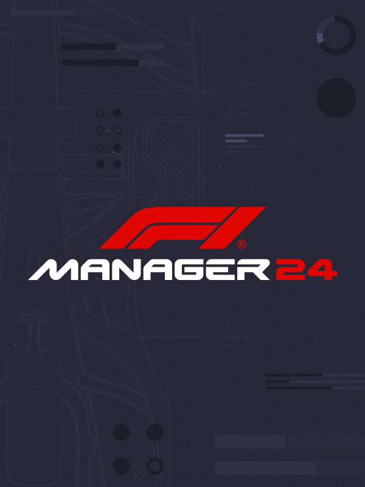

F1 Manager 2024
F1 Manager 2024
Details
|  | |
| Playtime | Not Played |
| Last Activity | Never |
| Added | 2/21/2025 16:50:25 |
| Modified | 4/11/2025 20:24:19 |
| Completion Status | Not Played |
| Library | Epic |
| Source | Epic |
| Platform | Epic Games |
| Release Date | 7/23/2024 |
| Community Score | |
| Critic Score | 76 |
| User Score | |
| Genre | Simulation Strategy |
| Developer | Frontier Developments |
| Publisher | Frontier Developments |
| Feature | Single-Player |
| Links | Steam Epic Official |
| Tag | [GGDeals] Synced |
Description
Lead your team to glory in F1® Manager 2024. A new Formula 1® season has arrived, and with it, the most comprehensive F1® management experience to date. Build a legacy with one of 10 official F1® constructors or create your own team for the very first time.

For the first time in the series, create your own team to challenge the grid and forge a new legacy. Customise every element of your team from your origin and livery design to logo and racing suits. Recruit the right staff and drivers and negotiate with sponsors for placement on your car.

The dramatic world of F1 comes to life on and off the track with the brand-new Mentality System. Manage the personalities and needs of your staff and drivers in the pursuit of success. Do you favour one over-performing driver at risk of alienating the other? A poor run of results may leave your team disillusioned and demotivated. Your management style is the key to success.

Competition within the F1 paddock is fierce, with all eyes on the future. Keep your stars happy to avoid allowing rivals from poaching your talent, disrupting your team’s trajectory towards the top.

Build a legacy by fostering talents from F2 & F3 to add to your own affiliate pool. Access the stars of the future and ensure their success is your success.

Even the best laid strategies can end at turn 1. Races present ever-evolving challenges and opportunities with the introduction of Mechanical Failures. Pushing cars to the edge lap after lap will exact a toll. Can you mitigate these issues as they arise to stay on track? Ensure you are in position to capitalise on rivals' issues and claim unexpected results.

Circuits visuals have been refreshed for the official 2024 season, including the returning Shanghai International Circuit. Improved track marbling and enhanced use of real-world data mean racing lines are clearer than ever, with enhanced trackside detailing providing the best-looking visual presentation to date.

Helicam provides a strategic bird’s eye view on the action, giving you a new perspective when executing and evolving your race day plans.
GENERAL GAME OVERVIEW
- Take your place on the F1 pitwall and manage every element of one of 10 official teams or create your very own team for the first time in the series and lead them to glory.
- Make your decisions count on the track. Plan and direct your team’s strategy and watch as your drivers execute your commands in thrilling F1 races, brought to life with a broadcast-quality presentation.
- The pressures of performing at the highest level of motorsport aren’t just reserved to race day. Manage your drivers, staff, car development and facilities throughout multiple seasons to give your team the best chance to claim a spot on the Formula 1 podium.
NEW FOR 2024
For the first time in the series, create your own team to challenge the grid and forge a new legacy. Customise every element of your team from your origin and livery design to logo and racing suits. Recruit the right staff and drivers and negotiate with sponsors for placement on your car.
The dramatic world of F1 comes to life on and off the track with the brand-new Mentality System. Manage the personalities and needs of your staff and drivers in the pursuit of success. Do you favour one over-performing driver at risk of alienating the other? A poor run of results may leave your team disillusioned and demotivated. Your management style is the key to success.
Competition within the F1 paddock is fierce, with all eyes on the future. Keep your stars happy to avoid allowing rivals from poaching your talent, disrupting your team’s trajectory towards the top.
Build a legacy by fostering talents from F2 & F3 to add to your own affiliate pool. Access the stars of the future and ensure their success is your success.
Even the best laid strategies can end at turn 1. Races present ever-evolving challenges and opportunities with the introduction of Mechanical Failures. Pushing cars to the edge lap after lap will exact a toll. Can you mitigate these issues as they arise to stay on track? Ensure you are in position to capitalise on rivals' issues and claim unexpected results.
Circuits visuals have been refreshed for the official 2024 season, including the returning Shanghai International Circuit. Improved track marbling and enhanced use of real-world data mean racing lines are clearer than ever, with enhanced trackside detailing providing the best-looking visual presentation to date.
Helicam provides a strategic bird’s eye view on the action, giving you a new perspective when executing and evolving your race day plans.
MORE TO DISCOVER
- 2024 F1® Sprint race format
- 2024 driver and staff roster, including drivers from development and team academies
- Improved approachability including refreshed data visualisations, the option to simulate the full race weekend, and enhanced tutorials
- Race Replay returns for another thrilling season, allowing you to relive and redefine moments from the 2024 FIA Formula One World Championship™